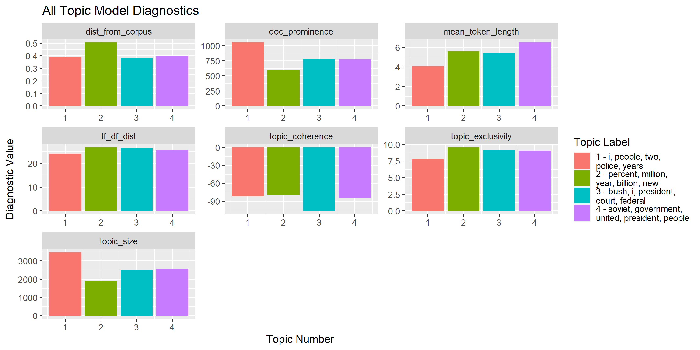

Like a (good) doctor, the goal of topicdoc is to help diagnose issues with your topic models through a variety of different diagnostics and metrics. There are a lot of great R packages for fitting topic models, but not a lot that help evaluate their fit. This package seeks to fill that void with functions that easily allow you to run those diagnostics/metrics efficiently on a variety of topic models.
Currently, only topic models from the topicmodels library are supported. However, I’m targeting those from the stm library next.
Installation
You can install the development version of topicdoc from Github with:
Example
This is a simple use case - using an LDA model with the Associated Press Dataset in topicmodels which is made up of AP articles from 1988.
library(topicdoc)
library(topicmodels)
data("AssociatedPress")
lda_ap4 <- LDA(AssociatedPress,
control = list(seed = 33), k = 4)
# See the top 10 terms associated with each of the topics
terms(lda_ap4, 10)
#> Topic 1 Topic 2 Topic 3 Topic 4
#> [1,] "i" "percent" "bush" "soviet"
#> [2,] "people" "million" "i" "government"
#> [3,] "two" "year" "president" "united"
#> [4,] "police" "billion" "court" "president"
#> [5,] "years" "new" "federal" "people"
#> [6,] "new" "market" "new" "police"
#> [7,] "city" "company" "house" "military"
#> [8,] "time" "prices" "state" "states"
#> [9,] "three" "stock" "dukakis" "party"
#> [10,] "like" "last" "campaign" "two"
# Calculate all diagnostics for each topic in the topic model
diag_df <- topic_diagnostics(lda_ap4, AssociatedPress)
diag_df
#> topic_num topic_size mean_token_length dist_from_corpus tf_df_dist
#> 1 1 3476.377 4.1 0.3899012 24.08191
#> 2 2 1910.153 5.6 0.5044673 26.67523
#> 3 3 2504.622 5.4 0.3830014 26.46131
#> 4 4 2581.848 6.5 0.3988826 25.52163
#> doc_prominence topic_coherence topic_exclusivity
#> 1 1053 -81.83339 7.813034
#> 2 598 -79.50691 9.560433
#> 3 783 -106.40062 9.162590
#> 4 775 -84.46149 9.058854
# ...or calculate them individually
topic_size(lda_ap4)
#> [1] 3476.377 1910.153 2504.622 2581.848It’s a lot easier to interpret the output if you put it all together in a nice plot.
library(ggplot2)
library(dplyr, warn.conflicts = F)
library(tidyr)
library(stringr)
diag_df <- diag_df %>%
mutate(topic_label = terms(lda_ap4, 5) %>%
apply(2, paste, collapse = ", "),
topic_label = paste(topic_num, topic_label, sep = " - "))
diag_df %>%
gather(diagnostic, value, -topic_label, -topic_num) %>%
ggplot(aes(x = topic_num, y = value,
fill = str_wrap(topic_label, 25))) +
geom_bar(stat = "identity") +
facet_wrap(~diagnostic, scales = "free") +
labs(x = "Topic Number", y = "Diagnostic Value",
fill = "Topic Label", title = "All Topic Model Diagnostics")
These diagnostics help provide a more rigorous confirmation of our intuition about identifying “good” versus “bad” topics in a topic model.
Almost, immediately you’d deduce that Topic 1 looks odd as it contains a lot of generic words (e.g. “two”, “three”, “like”). Using the diagnostics provided, you can see that Topic 1 has the largest topic size and highest document prominence indicating that it’s incorporating many more tokens and documents than the others. The low TF/DF distance and exclusivity confirm our susipicion about the generic nature of the topic.
Alternatively, you can see that Topic 2 - the one centered around financial news - is the most coherent and exclusive topic.
Diagnostics/Metrics Included
| Diagnostic/Metric | Function | Description |
|---|---|---|
| topic size | topic_size |
Total (weighted) number of tokens per topic |
| mean token length | mean_token_length |
Average number of characters for the top tokens per topic |
| distance from corpus distribution | dist_from_corpus |
Distance of a topic’s token distribution from the overall corpus token distribution |
| distance between token and document frequencies | tf_df_dist |
Distance between a topic’s token and document distributions |
| document prominence | doc_prominence |
Number of unique documents where a topic appears |
| topic coherence | topic_coherence |
Measure of how often the top tokens in each topic appear together in the same document |
| topic exclusivity | topic_exclusivity |
Measure of how unique the top tokens in each topic are compared to the other topics |